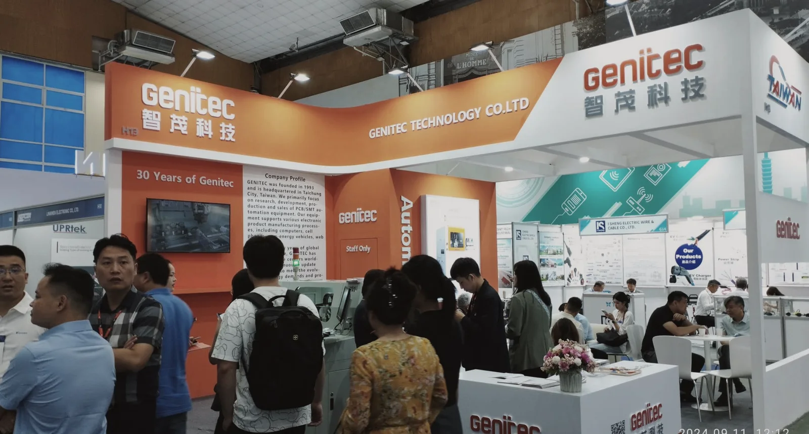
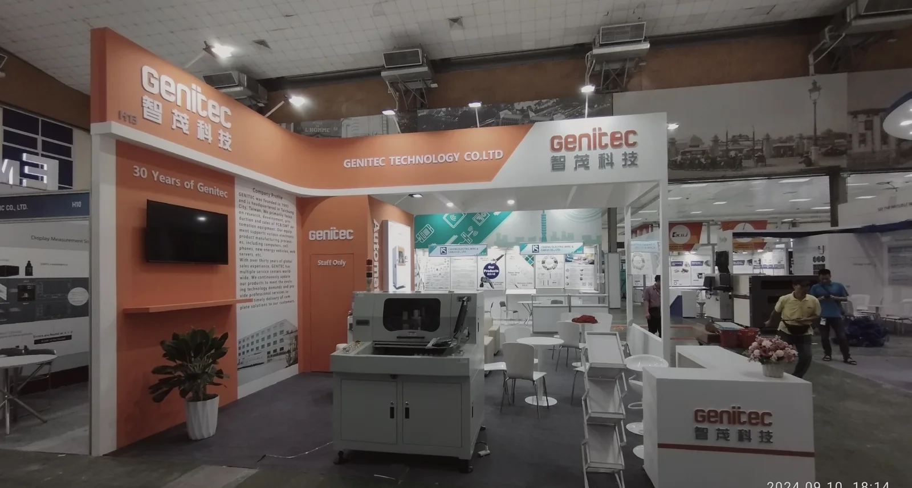
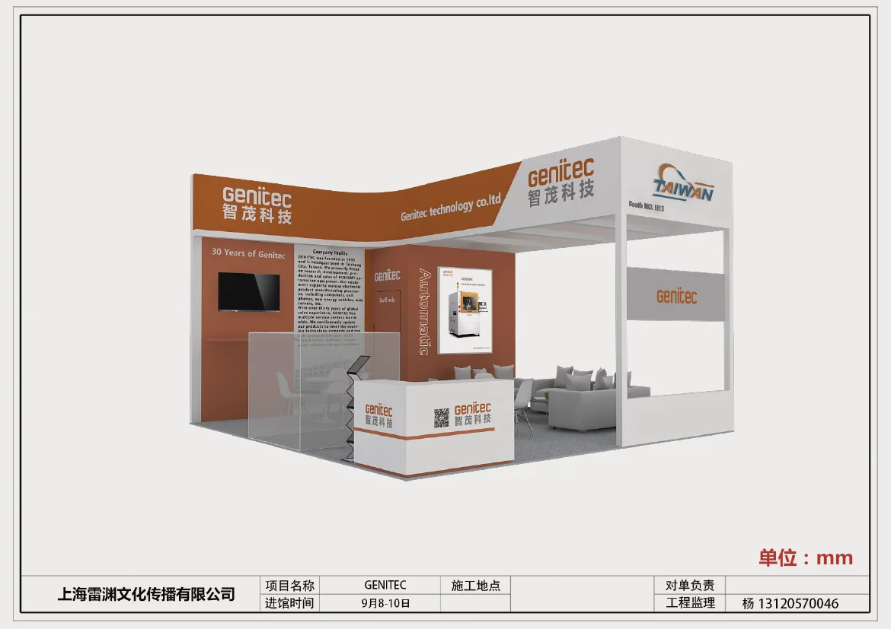
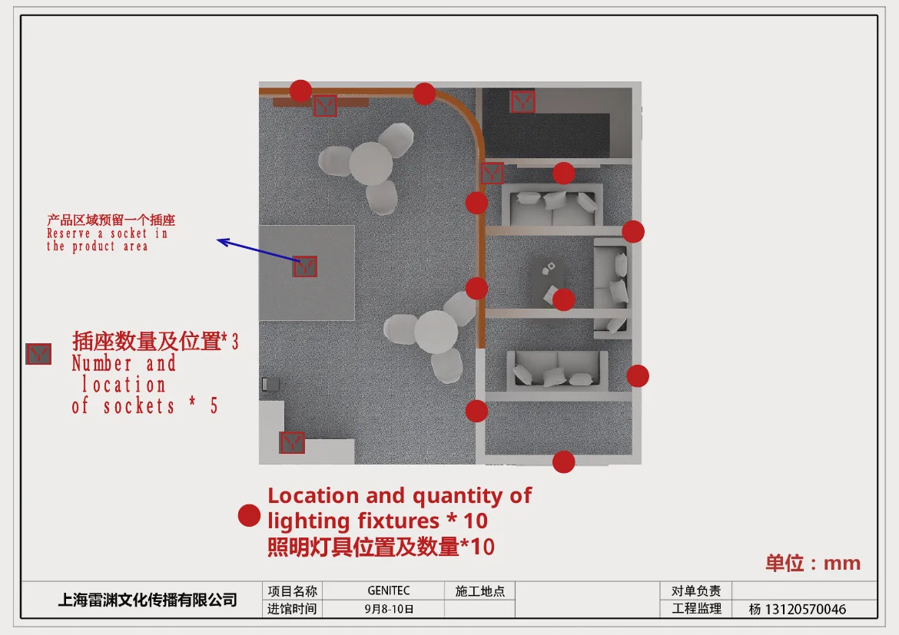
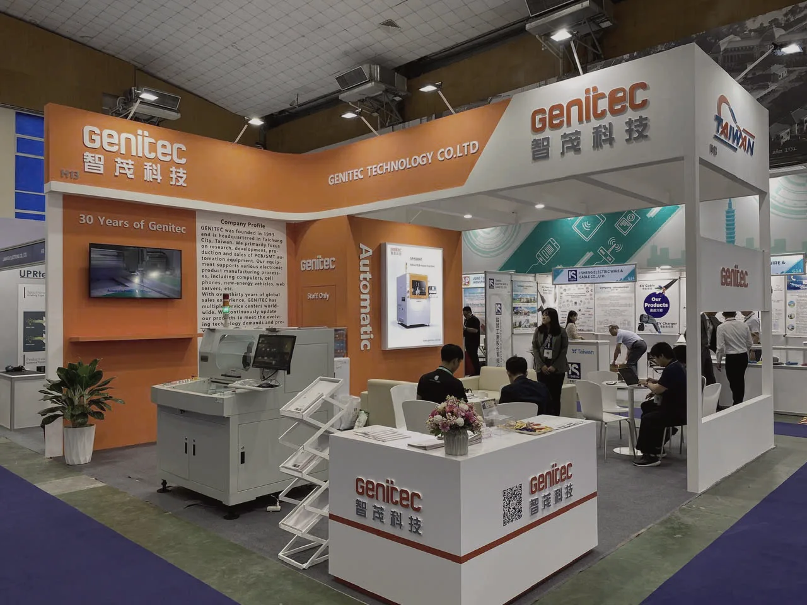

COMMUNICATION & RECEPTION
Within a compact 6 × 6 m footprint, product communication, a 30th-anniversary narrative and business reception are integrated into one open booth.
在6×6米的紧凑空间中，产品传播、三十周年品牌叙事与商务接待被整合为一个开放展位。
Trong mặt bằng 6 × 6 m, truyền thông sản phẩm, câu chuyện 30 năm và khu tiếp khách được tích hợp trong một gian hàng mở.
TECHNOLOGY WITH HOSPITALITY
The orange brand wall guides visitors inward while the white overhead frame maintains visibility from several aisles. Product displays and seating share a professional, welcoming atmosphere.
橙色品牌墙引导观众进入，白色架空框架保持多通道可见性。产品展示与洽谈区共同形成专业而友好的氛围。
Mảng thương hiệu màu cam dẫn khách vào trong, còn khung trắng phía trên duy trì khả năng nhận diện từ nhiều lối đi. Khu trưng bày và tiếp khách tạo nên một không gian chuyên nghiệp, thân thiện.






